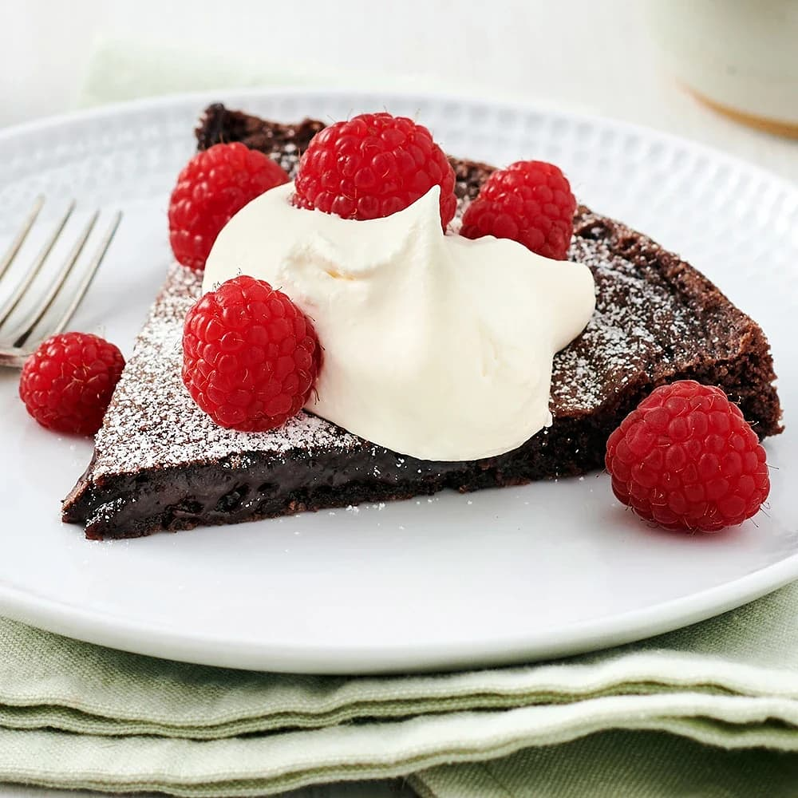

Instruktioner
- sätt ugnen på 175 grader varmluft.
- vispa ägg och socker poröst (vitt och en luftig konsistens)
- sila ned mjölet och kakao
- Smält smöret och låt svalana något
- vispa ner smöret i smeten lite i taget
- lägg ett bakplåtspapper i botten av en springform och smöra
in kanterna av formen så kakan inte fatsnar
i kanterna
- häll ned smeten i formen och bred ut smeten till formens kanter
- ställ in i ugnen i 18-20
- nu är kakan klar och det är dags att hugga in.
